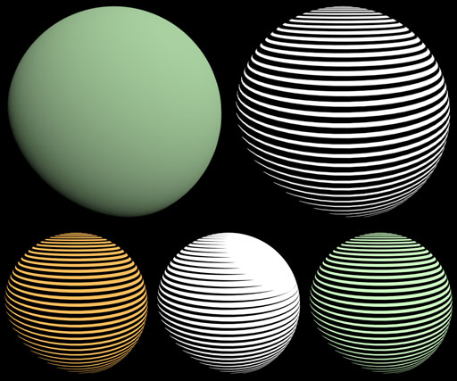

Obq_Etching
Class
Material
Output
Color RGB
Synopsis
A shader that somewhat creates an etching look. The orientation of the lines are define by UVs or any vectorial coordinates (the first 2 coordinates of any vector will be used). The number of lines are defined by a frequency and the thickness of the lines are defined by the shading input, normally a shader like the standard or Obq_Toon.

Fig.1 : In this example, the Stanford Buddha and the background had a standard plugged into the shading input of Obq_Etching. UVs were used as coordinates for the Buddha, while a camera projection coordinates was used for the background (see the Usage section). Left is the shading input and right is the output.
To better illustrate what this shader does, take a look at the following images.

Fig.2 : A)Texture coordinates. B) Shading input (a simple gradient in this case) . C) A remapped sine wave is used along the V axis of the object, thus making lines along the U axis. The intensity of the shading corresponds to the position of a virtual plane intersecting the wave. If the intensity of the shading is greater than the value of the sine at that V coordinate, then the bright color is used, else it's the dark color. D) The final output.
Usage
To work properly, Obq_Etching needs 2 external nodes for shading input and coordinates input. You should use a ray_switch in order to have Obq_Etching only evaluated by camera rays.

Fig.3 : Typical render tree for Obq_Etching.
Bright

Fig.4 : A sphere with a spherical projection as coordinates. Top row images are the input shading left and Obq_Etching result right ( using white as bright color, 1.0 as bright point, black as dark color and 0.0 as black point. The lower row, from left to right : using an orange bright color, using a bright point of 0.5, enabling multiply by normalized input color.
Bright Color [bright_color]
This is the color used when the value of the shading input is over the sine wave.
Bright Point [bright_point]
This corresponds to the maximum value of the sine wave, meaning that when the shading input color reaches this value or higher, the bright color will be used no matter where you are in the period.
Multiply by normalized input [multiply_bright_color]
If enabled, the bright color is multiplied by the shading input's normalized color.
Note : To determine the shading input's normalized color, an RGB to HSV conversion is done, the V value is then set to 1.0 and an HSV to RGB conversion is done.
Dark

Fig.5 : A sphere with a spherical projection as coordinates. Using the same input shading as figure 4, these images correspond, from left to right and top to bottom : grey dark color, grey dark color and 0.25 as dark point, enabling multiply by normalized input color, same as previous but using a white normalized black color instead of black.
Dark Color [dark_color]
This is the color used when the value of the shading input is over the sine wave.
Dark Point [dark_point]
This corresponds to the minimum value of the sine wave, meaning that when the shading input color reaches this value or lower, the dark color will be used no matter where you are in the period.
Multiply by normalized input [multiply_dark_color]
If enabled, the dark color is multiplied by the shading input's normalized color.
Normalized black color [normalized_black_color]
Because a pure black color can't be properly normalized using the previously explained workflow, another parameter must be used to set what color should be used in this case.
Signal
Frequency [frequency]
This is the number of period in the [0,1[ interval of UV.v values. A higher frequency means more lines and lower means less.

Fig.6 : Three (3) different frequency values, from left to right : 10, 50 and 100.
Offset [offset]
This parameter offsets the period of the sine wave, which results in a translation of the lines.

Fig.7 : A fractal is plugged into the offset port in order to bend the lines.
Feather [feather]
This parameter somewhat blurs the edges.

Fig.8 : Three (3) different feather values, from left to right : 0, 0.5 and 1.
Use linear wave type [use_linear_signal]
Instead of using a sine wave, this allows the use of triangle wave.
Auto Filtering
Enable [autoFiltering]
High frequency patterns tend to create moirés and other aliasing artefacts. Because of this, an auto-filtering option based on the UV screen space derivatives was implemented.

Fig.9 : From left to right : no auto-filtering, auto-filtering enable, auto-filtering level.
Show advanced options [autoFilteringAdvanced]
Because the settings were set empirically, checking this will open the options for manual tweaking.
Show auto-filter level [autoFilteringOut]
This debug mode will enable you to see how much filtering is done (see figure 9).
Apply to [autoFilteringMode]
This paramters allows you to choose what auto-filtering drives.
| • | Feather | : | the auto-filtering affects feather value. | |
| • | Feather and Mix | : | the auto-filtering affects feather and mix values. | |
| • | Mix | : | the auto-filtering affects mix value. |
Also affected by U [autoFilteringU]
Because the lines are stacked up in the V axis, filtering based on V derivatives is more important. Enabling this will also use the U derivatives to control the level of auto-filtering.
Bias [autoFilteringBias]
Bias control of level of auto-filtering.
Gain [autoFilteringGain]
Gain control of level of auto-filtering.
Range based on Frequency [autoFilteringAutoRange]
This allows the auto-filtering level to adapt to the frequency. For the same values of derivatives, a low frequency won't need as much filtering as a high frequency.
Dots
Enable [enable_dots]
This option enables the use of dots in bright and dark values instead of lines.

Fig.10 : Top row from left to right : without dots, with dots enable. Bottom row from left to right : progressive dots bright = 0.9 and dark = 0.1, progressive dots bright = 0.75 and dark = 0.25.
Dots appear progressively [progressive_dots]
Enables the bright dots to appear progressively in the dark lines and vice-versa.
Bright dots start (ratio) [bright_dots_start]
From this intensity and up, bright dots start to appear in dark lines. The ratio means that we consider 0 the dark point and 1, the bright point.
Dark dots start (ratio) [dark_dots_start]
From this intensity and down, dark dots start to appear in bright lines. The ratio means that we consider 0 the dark point and 1, the bright point.
Input
Shading Input [shading_input]
This is the value that drives the thickness of the lines (ratio bright vs dark).
Coordinates Input [coordinates_input]
This is the coordinates that drives the orientation of the lines. The lines are perpendicular to V axis in UV space (Y axis in XYZ).
Note : Only the first 2 coordinates (XY) of the vector will be used. If the dots are not enabled, than only Y is used.
Use average RGB instead of luminance [use_average_rgb]
Normally, the shading input's luminance is used in order to make a scalar value out of the RGB. You can use the average intensities intead by enabling this.
Mix [mix]
A linear interpolation mix between the etching result (0.0) and the shading input (1.0).
AOVs
Two (2) AOVs are also available : a grayscale matte of the bright component and the shading input.